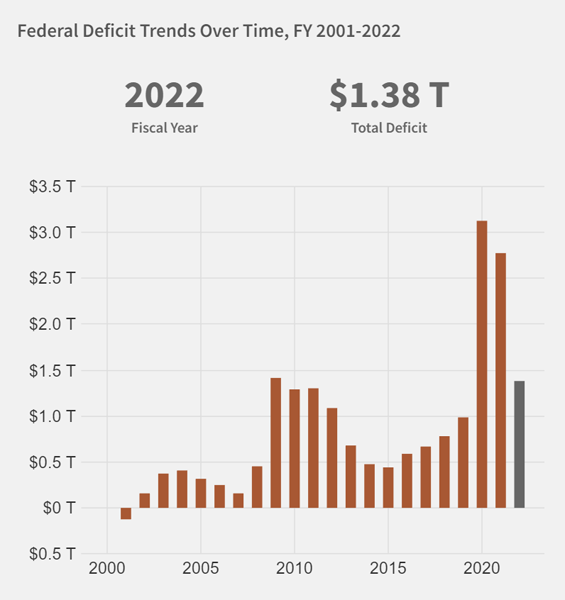

- This website provides a small sample of data from the 2023 United States budget. It also describes the funding allocations for two initiatives.
In addtion, the federal deficit is described with illustrations of comparison to the previous years.
Finally, on this page, a summary analyis is provided accompanied by an image of the deficit trend since 2001.
- The United States budget is complex. Each year, the sitting president submits the full budget to Congress.
This website describes the funding allocations for the "American Rescue Plan Act of 2021" and Executive Order 14017: "America's Supply Chains."
- From this research, in this author's opinion, our federal government has made notable improvements to our healthcare system infrastructure and capacity.
In addition, despite all the partisan arguments we see in the media, our government has made significant progress in the last year to domesticate manufacturing,
improve infrastructure, and provide services to the underrepresented.
- It is possible that these inititives will boost opportunity and reduce poverty, improve health and well-being, and advance widely shared prosperity.
- Interstingly, these plans seem to have a backbone of fiscal responsibility by paying for them by raising taxes on the wealthy and requiring corporations to pay their fair share.
- Coming from a fiscally responsible family background, it has always amazed me when the media and government officials
nonchalantely state the enormous annual deficit and the total government debt. How is the government allowed to spend over a trillion dollars
more than it receives in revenue? The graph below provides a historical perspective to this question. Maybe one day, our government will
use business concepts and economics to understand they should budget spending appropriately with revenue.
- Since 2001, the federal government’s budget has run a deficit each year. Starting in 2016, increases in spending
on Social Security, health care, and interest on federal debt have outpaced the growth of federal revenue.
From FY 2019 to FY 2021, federal spending increased by about 50 percent in response to the COVID-19 pandemic.
